Lolai
Lolai atau yang dikenal “Negeri di Atas Awan”. Lokasi persisnya berada di Lolai, Kepala Pitu, Rantepao, Sulawesi Selatan.
Berada di ketinggian 1.300 mdpl memperlihatkan luasnya pemandangan awan yang tebal, membuat Anda seperti berada di atas awan.
Karena berada di atas awan, Lolai sering disebut "Negeri di Atas Awan". Untuk bisa sampai ke sini harus menempuh jarak sekitar
20 km selama 30 menit perjalanan dari kota Rantepao, ibu kota Kabupaten Toraja Utara menggunakan mobil atau sepeda motor. Anda
juga perlu untuk berhati-hati karena kondisi jalan yang berliku-liku, sempit, dan menanjak. Pastikan lampu mobil dan rem
berfungsi dengan baik untuk membuat perjalanan lebih aman.
 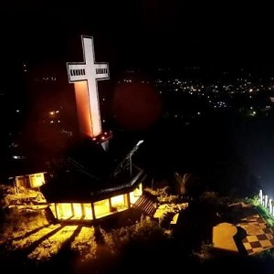
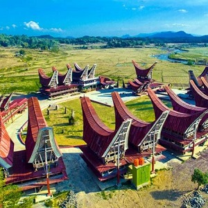
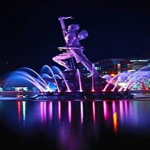
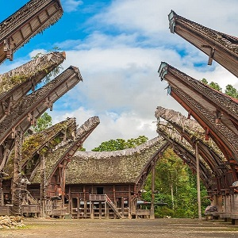
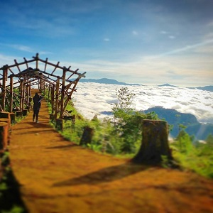
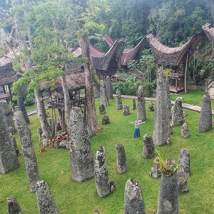
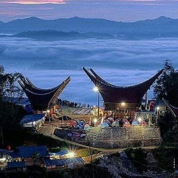
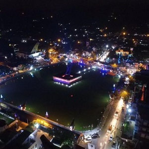
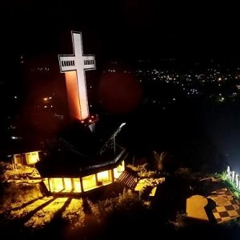
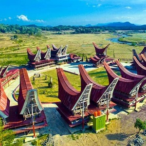
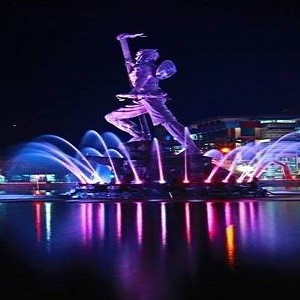
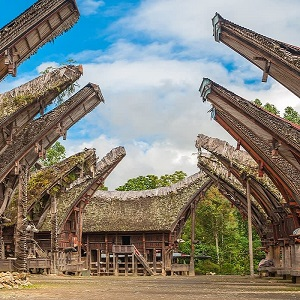
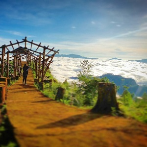
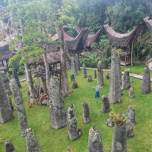
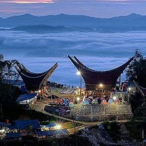
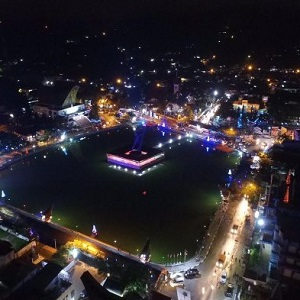